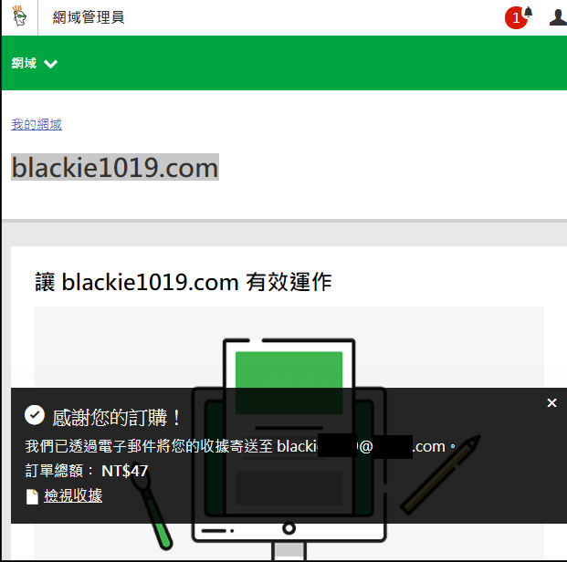
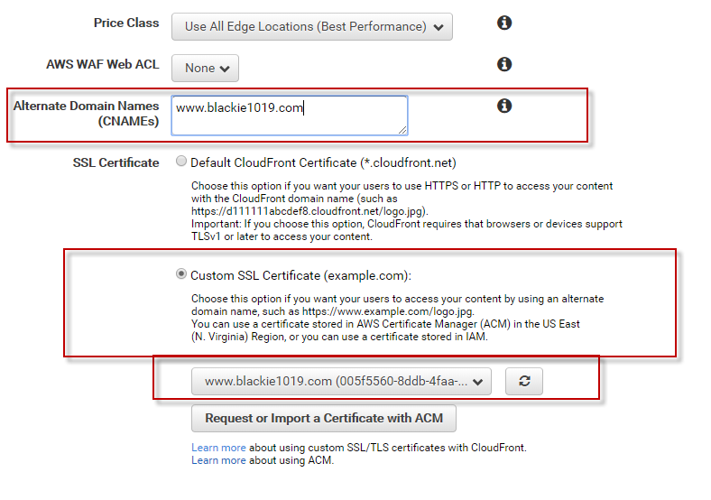
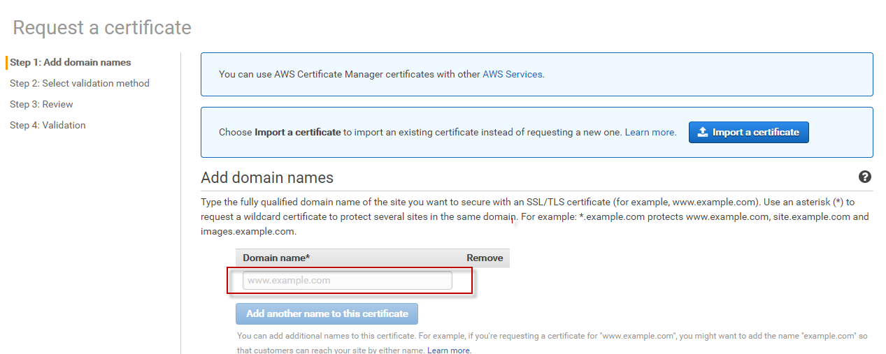
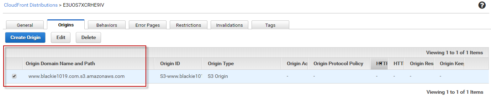
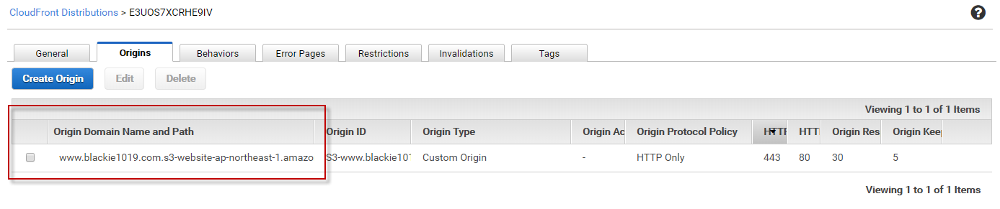
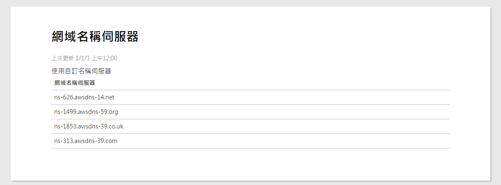

30天鐵人賽介紹 AWS 雲端世界 - 11: 透過 AWS Certificate Manager 管理 SSL 並讓架設的靜態網頁支援 HTTPS
Static web hosting with AWS Certificate Manage for SSL(Secure Sockets Layer)
下面的實戰會帶大家改用 GoDaddy 買的網域綁到 Cloudfront 並透過 ACM 啟用 SSL的功能達成網站運行在 HTTPS的效果。
這邊可以看到昨天介紹的靜態網路是跑在 HTTP 上面不是 HTTPS，這邊介紹如何透過 AWS 的 Certificate Manager 來建立 SSL 憑證架設 HTTPS 網站。
AWS Certificate Manager (ACM)是免費的服務，強烈建議有透過 S3 架設靜態網站的朋友全部轉換到 HTTPS 去，不少瀏覽器如 Chrome 推出的Chrome 56將開始把含有機密資訊卻只使用HTTP未加密通訊協定的網頁標註為「不安全」（Not secure）。
ACM 主要是提供SSL/TLS 憑證的管理免去購買、上傳和續約 SSL/TLS 憑證的複雜程序，而且整合了 AWS 其他的服務，方便直接啟用。而透過 ACM 佈建的 SSL/TLS 憑證是免費的，只需支付為原服務所建立的 AWS 資源費用。
詳細流程設置方式可以參考AWS 提供免費的 SSL 憑證服務！超簡單懶人包看這裡
High Level Overview
整個架構可以參考網路上其他人的介紹：

截圖出處：
這個影片的作法是把 DNS 的管理權轉交至 Amazon Route 53 託管，然後再從 Route 53 做 CNAME 管理。本篇的作法也是同樣的方式。
如果是沒有要使用 Route 53 託管，而是沿用 Godaddy 服務的話就只要去 Godaddy 後台新增 CNAME 指向 Cloudfront 當前的 Domain 即可。剩下的步驟可參考 John 吳大的 AWS S3 + CloudFront - SSL 靜態網頁架站教學。
Hands on Lab
這邊先準備好 GoDaddy 買好的網域($47一年有夠便宜)：

而如果要在 S3 Static Web Hosting 上面使用SSL，首先要先透過 Cloudfront 建立 web distribution ，然後再將Domain 替換成我們申請的，並按下上面將先前的 Website 的 alternative Domain Names 換成 blackie.com:


然後收信按下同意即可完成設定：
而這邊也要注意要設定我們網站的起始檔案名稱：
當我們按下確認後，大約需要20分鐘以上的時間進行配置，而接下來我們需要設定 Origin Domain Name and Path 換成 S3 Static Hosting 的 Domain:


接下來我們將使用 Route 53 來幫我們託管我們先前的 Godaddy 服務，進入 Route 53 服務後直接新增一個 Hosted Zone：
這邊可以看到他配發的四組 NS 的 value，將這些值填入 Godaddy 後臺並儲存。

接著我們新增一組 Record set 給 Cloudfront 原先的 domain 做管理：
上述步驟會將 DNS 的管理權轉交給 Route 53 託管，所以需要一些時間。等到服務轉交完成可以看到轉換成功的畫面就會如下，瀏覽器這邊會顯示為安全連線：